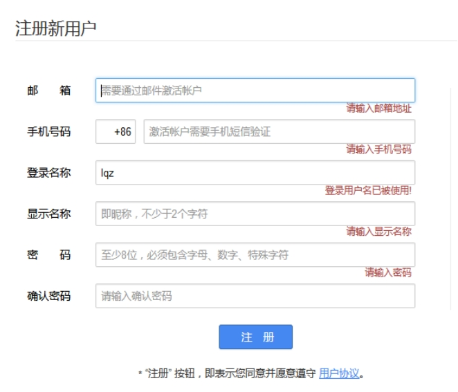
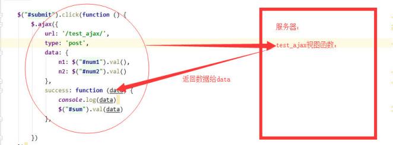

一、Ajax介绍 1、什么是ajax 简单地讲，ajax就是一种前端技术，用于朝着后端程序发送请求和数据
1 2 3 4 5 6 7 8 9 10 11 12 13 14 15 16 1 、浏览器地址栏输入url地址 请求方式默认并且只能是：get请求 2 、a标签 请求方式默认并且只能是：get请求 3 、form表单 请求方式可以是：get与post请求 4 、ajax技术 请求方式可以是：get与post请求 AJAX（Asynchronous Javascript And XML）翻译成中文就是“异步Javascript和XML”。 即使用Javascript语言与服务器进行异步交互，传输的数据为XML 当然，传输的数据不只是XML,现在更多使用json数据。
其实Ajax不是具体的某一个技术，而是下述几种技术的融合，每种技术都有其独特之处，合在一起就成了一个功能强大的新技术
• (1)XHTML和CSS的基于标准的表示技术
• (2)DOM进行动态显示和交互
• (3)XML和XSLT进行数据交换和处理
• (4)XMLHttpRequest进行异步数据检索
• (5)Javascript将以上技术融合在一起
所以ajax依赖依赖浏览器的 JavaScript 和XML
2、为何要用ajax 在我们之前的开发，每当用户向服务器发送请求，\ 哪怕只是需要更新一点点的局部内容，服务器都会将整个页面进行刷新，这么做的问题有两点**
• \ 1、性能会有所降低(一点内容，刷新整个页面！)**
• \ 2、用户的操作页面会中断(整个页面被刷新了)**
而我们基于ajax可以使用Javascript技术向服务器发送异步请求，因为异步请求，这可以使我们在不刷新页面的前提下拿到后端数据，完成页面的局部刷新，所以总结为何用ajax呢，牢牢记住两个关键词即可
• 1、异步请求
• 2、局部刷新
例如：我们可以尝试一下博客园的注册页面，那些局部刷新的部分背后都是ajax请求

3、ajax的原理 \ XMLHttpRequest对象是Ajax中最重要的一个对象\。*使用Ajax更多的是编写客户端代码 ，而不是服务端的代码。
我们使用AJAX之后，\ 浏览器是先把请求发送到XMLHttpRequest异步对象之中，异步对象对请求进行封装，然后再与发送给服务器。服务器并不是以转发的方式响应，而是以流的方式把数据返回给浏览器**
XMLHttpRequest异步对象会\ 不停监听服务器状态的变化，得到服务器返回的数据，就写到浏览器上【因为不是转发的方式，所以是无刷新就能够获取服务器端的数据】**
二、基于jquery实现ajax 注意
1 2 3 4 5 6 如果请求方法是post，需要先注释掉settings.py中的一行代码，后续我们会详细介绍该行代码的作用 MIDDLEWARE = [ ... ... ]
1、案例一：计算器 通过Ajax，实现前端输入两个数字，服务器做加法，返回到前端页面，实现如下
index.html
1 2 3 4 5 6 7 8 9 10 11 12 13 14 15 16 17 18 19 20 <input type ="text" id ="num1" >+<input type ="text" id ="num2" >=<input type ="text" id ="sum" > <button id ="submit" >我是按钮</button> <script src="https://code.jquery.com/jquery-3.6.0.js" ></script> <script> $("#submit" ).click(function () { $.ajax({ url:"/test_ajax/" , // 朝着哪个地址发送ajax请求，不写则默认当前地址 type :"post" , // 请求方法可以是get或者post data:{ n1:$("#num1" ).val(), n2:$("#num2" ).val() }, // 朝后端发送的数据 success:function (data) { console.log(data); $("#sum" ).val(data) } }) }) </script>
urls.py
1 2 3 4 urlpatterns = [ path('index/' ,views.index), path('test_ajax/' ,views.test_ajax), ]
views.py
1 2 3 4 5 6 7 8 9 def index (request ): return render(request, 'index.html' ) def test_ajax (request ): request.is_ajax() num1 = request.POST.get("n1" ) num2 = request.POST.get("n2" ) res = int (num1) + int (num2) return HttpResponse(res)
\ Ajax—->服务器——>Ajax执行流程图**

2、案例二：登录验证 用户在表单输入用户名与密码，通过Ajax提交给服务器，服务器验证后返回响应信息，客户端通过响应信息确定是否登录成功，成功，则跳转到首页，否则，在页面上显示相应的错误信息
login.html
1 2 3 4 5 6 7 8 9 10 11 12 13 14 15 16 17 18 19 20 21 22 23 24 用户名：<input type ="text" id ="user" > 密码：<input type ="text" id ="pwd" > <button id ="btn" >登录</button><span id ="err" ></span> <script src="https://code.jquery.com/jquery-3.6.0.js" ></script> <script> $("#btn" ).click(function(){ $.ajax({ url:"" , type :"post" , data:{ username:$("#user" ).val(), password:$("#pwd" ).val(), }, success:function(data){ var data = JSON.parse(data); if (data.user) { location.href="/index/" ; }else { $("#err" ).text(data.message).css("color" ,"red" ) } } }) }) </script>
urls.py
1 2 3 4 urlpatterns = [ path('index/' ,views.index), path('login/' ,views.login), ]
views.py
1 2 3 4 5 6 7 8 9 10 11 12 13 14 15 16 def login (request ): if request.method == "GET" : return render(request, 'login.html' ) elif request.method == "POST" : username = request.POST.get('username' ) password = request.POST.get('password' ) back_dic = {'user' : None , 'message' : None } if username == "allen" and password == "123" : back_dic['user' ] = username back_dic['message' ] = "登录成功" else : back_dic['message' ]='用户名或密码错误' import json return HttpResponse(json.dumps(back_dic))
三、文件上传 1、储备知识HttpRequest.body 1 2 3 4 5 6 7 8 9 10 11 12 13 14 15 16 17 18 19 20 21 22 23 24 25 26 27 28 29 30 31 32 33 34 35 36 37 38 39 40 41 42 43 44 45 46 47 48 49 50 51 52 53 54 55 56 57 58 前端的请求发送到django后都会被封装到HttpRequest对象中，而该对象下有一个非常重要的属性 HttpRequest.body，即请求体 当浏览器基于http协议的GET方法提交数据时，没有请求体一说, 数据会按照k1=v1&k2=v2&k3=v3的格式放到url中， 然后发送给django，django会将这些数据封装到request.GET中， 注意此时的请求体request.body为空、无用 当浏览器基于http协议的POST方法提交数据时，数据会放在请求体内，然后发送给django django会将接收到的请求体数据存放于HttpRequest.body属性中. 但该属性的值为Bytes类型(套接字数据传输都是bytes 类型)， 而通常情况下直接处理Bytes、并从中提取有用数据的操作是复杂而繁琐的， 好在django会对它做进一步的处理与封装以便我们更为方便地提取数据， 具体如何处理呢？ 当前端采用POST提交数据时，数据有三种常用编码格式，编码格式不同Django会有不同的处理方式 HttpRequest.body中的数据格式为b'a=1&b=2&c=3' django会将其提取出来封装到request.POST中 request.FILES此时为空 如： print (request.body) print (request.POST) print (request.FILES) HttpRequest.body中的数据格式为b'------WebKitFormBoundaryKtcwuksQltpNprep\r\nContent-Disposition: form-data;......' ,注意，文件部分数据是流数据，所以不在浏览器中显示是正常的 django会将request.body中的非文件数据部分提取出来封装到request.POST中 将上传的文件部分数据专门提取出来封装到request.FILES属性中 如： print (request.body) print (request.POST) print (request.FILES) 强调： 1 、毫无疑问，编码格式2 的数据量要大于编码格式1 ，如果无需上传文件，还是推荐使用更为精简的编码格式1 2 、FILES will only contain data if the request method was POST and the <form> that posted to the request had enctype="multipart/form-data" . Otherwise, FILES will be a blank dictionary-like object . 此时在django后台，request.POST和request.FILES中是没有值的，都放到request.body中了，需要用json.loads对其进行反序列化 如： print (request.body) print (request.POST) print (request.FILES) 前端往后台POST提交数据，常用技术有form表单和ajax两种 form表单可以设置的数据编码格式有：编码格式1 、编码格式2 ajax可以设置的数据编码格式有：编码格式1 、编码格式2 、编码格式3
form表单可以通过属性enctype进行设置编码格，如下
编码格式1(默认的编码格式):enctype=”application/x-www-form-urlencoded”
编码格式2(使用form表单上传文件时只能用该编码):enctype=”multipart/form-data”
针对编码格式2我们来写一个form表单上传文件的案例，如下
在templates目录下新建register.html
1 2 3 4 5 6 7 8 9 10 11 12 13 14 15 16 17 18 19 20 21 22 <!DOCTYPE html> <html lang="en" > <head> <meta charset="UTF-8" > <title>注册页面</title> </head> <body> <form action="" method="POST" enctype="multipart/form-data" > {% csrf_token %} <p> 用户名:<input type ="text" name="name" > </p> <p> 头像:<input type ="file" name="header_img" > </p> <p> <input type ="submit" value="提交" > </p> </form> </body> </html>
urls.py
1 2 3 4 5 6 from django.urls import re_pathfrom app01 import views urlpatterns = [ re_path(r'^register/$' ,views.register), ]
views.py
1 2 3 4 5 6 7 8 9 10 11 12 13 14 15 16 17 18 19 20 21 22 23 24 25 26 27 28 29 30 31 32 33 34 35 36 37 38 39 40 41 42 43 44 45 46 from django.shortcuts import render,HttpResponse def register (request ): ''' 保存上传文件前，数据需要存放在某个位置。默认当上传文件小于2.5M时，django会将上传文件的全部内容读进内存。从内存读取一次，写磁盘一次。 但当上传文件很大时，django会把上传文件写到临时文件中，然后存放到系统临时文件夹中。 ''' if request.method == 'GET' : return render(request, 'register.html' ) elif request.method == 'POST' : name = request.POST.get('name' ) file_obj = request.FILES.get('header_img' ) filename = file_obj.name print (filename) file_obj.chunks() with open ('templates/%s' %filename, 'wb' ) as f: for line in file_obj.chunks(): f.write(line) return HttpResponse('注册成功' ) ''' file_obj.read() 当文件过大时，会导致内存溢出，系统崩溃 应该使用file_obj.chunks()读取，官网解释如下 uploadedFile.chunks(chunk_size=None)¶ A generator returning chunks of the file. If multiple_chunks() is True, you should use this method in a loop instead of read(). In practice, it’s often easiest simply to use chunks() all the time. Looping over chunks() instead of using read() ensures that large files don’t overwhelm your system’s memory. 注意：直接for循环file_obj也不行，因为直接for读取文件是按照行分隔符来依次读取的，不同平台下的文件行分隔符不同，有可能一行的数据就很大，所以还是推荐file_obj.chunks()来读取，官网解释如下 Like regular Python files, you can read the file line-by-line simply by iterating over the uploaded file: for line in uploadedfile: do_something_with(line) Lines are split using universal newlines. The following are recognized as ending a line: the Unix end-of-line convention '\n', the Windows convention '\r\n', and the old Macintosh convention '\r'. '''
3、ajax上传文件 ajax指定编码格式如下
1 2 3 4 5 6 7 8 9 10 11 12 13 14 15 16 17 18 19 20 21 contentType:"application/x-www-form-urlencoded" // 不指定默认就是这种格式 var formdata=new FormData(); // 创建一个formdata对象 formdata.append('user' ,$("#user" ).val()); formdata.append('img' ,$("#img" )[0 ].files[0 ]); $.ajax({ url:'' , type :'post' , processData:false, //告诉jQuery不要去处理发送的数据 contentType:false,// 告诉jQuery不要去设置Content-Type 请求头 data:formdata, success:function (data) { console.log(data) } }) contentType:'application/json' data:JSON.stringify(你的数据), // 记住将数据转换成json字符串格式
针对编码格式2我们来写一个ajax上传文件的案例，如下
在templates目录下新建register.html
1 2 3 4 5 6 7 8 9 10 11 12 13 14 15 16 17 18 19 20 21 22 23 24 25 26 27 28 29 30 31 <html lang="en" > <head> <meta charset="UTF-8" > <title>注册页面</title> </head> <body> 用户名:<input type ="text" id ="user" > 头像:<input type ="file" id ="img" > <button id ="btn" >提交</button> <script src="https://code.jquery.com/jquery-3.6.0.js" ></script> <script> $("#btn" ).click(function () { var formdata=new FormData(); // 创建一个formdata对象 formdata.append('user' ,$("#user" ).val()); formdata.append('img' ,$("#img" )[0 ].files[0 ]); $.ajax({ url:"" , type :"post" , data: formdata, processData: false, contentType:false, success:function (data) { console.log(data); } }) }) </script> </body> </html>
urls.py
1 2 3 4 5 6 from django.urls import re_pathfrom app01 import views urlpatterns = [ re_path(r'^register/$' ,views.register), ]
views.py
1 2 3 4 5 6 7 8 9 10 11 12 13 def register (request ): if request.method == "POST" : print ('==ajax==>' ) print (request.POST) print (request.FILES) file_obj = request.FILES.get("img" ) filename = file_obj.name with open ('templates/%s' % filename, mode='wb' ) as f: for line in file_obj.chunks(): f.write(line) return HttpResponse("上传完毕" ) return render(request, 'register.html' )
4、ajax发送json数据 register.html
1 2 3 4 5 6 7 8 9 10 11 12 13 14 15 16 17 18 19 20 21 22 23 24 25 26 27 28 <!DOCTYPE html> <html lang="en" > <head> <meta charset="UTF-8" > <title>注册页面</title> </head> <body> <button id ="btn" >提交</button> <script src="https://code.jquery.com/jquery-3.6.0.js" ></script> <script> $("#btn" ).click(function () { var dic = {"name" :"allen" ,"age" :18 }; $.ajax({ url:"" , type :"post" , contentType:"application/json" , data: JSON.stringify(dic), success:function (data) { var res = JSON.parse(data); // 如果返回的数据也是json格式，那么需要先反序列化 console.log(res.x); // 然后才能访问属性 // console.log(data.x); // 如果后台返回的是JsonResponse,那么直接使用就好 } }) }) </script> </body> </html>
urls.py
1 2 3 urlpatterns = [ re_path("^register/$" ,views.register) ]
views.py
1 2 3 4 5 6 7 8 9 10 11 12 13 14 15 16 17 def register (request ): if request.method == "POST" : print ('==ajax==>' ) print (request.is_ajax()) print (request.body) print (request.POST) print (request.FILES) import json dic = json.loads(request.body) print (dic["name" ]) return HttpResponse(json.dumps({"x" :1 ,'y' :2 })) return render(request, 'register.html' )
5、Django内置的serializers 如果我的前端想拿到由ORM得到的数据库里面的一个个用户对象，我的后端想直接将实例化出来的数据对象直接发送给客户端，那么这个时候，就可以用Django给我们提供的序列化方式
1 2 3 4 5 6 7 8 9 10 def register (request ): if request.method == "POST" : from app01.models import Book from django.core import serializers objs = Book.objects.all () res = serializers.serialize('json' ,objs) return HttpResponse(res) return render(request, 'register.html' )
前端代码
1 2 3 4 5 6 7 8 9 10 11 12 13 14 15 16 17 18 19 20 21 22 23 24 25 26 27 28 29 30 <!DOCTYPE html> <html lang="en" > <head> <meta charset="UTF-8" > <title>注册页面</title> </head> <body> <button id ="btn" >提交</button> <script src="https://code.jquery.com/jquery-3.6.0.js" ></script> <script> $("#btn" ).click(function () { var dic = {"name" :"allen" ,"age" :18 }; $.ajax({ url:"" , type :"post" , contentType:"application/json" , data: JSON.stringify(dic), success:function (data) { var books = JSON.parse(data); // 如果返回的数据也是json格式，那么需要反序列化 books.forEach(function (book) { console.log(book.fields.name); console.log(book.fields.price); console.log(book.fields.publish_date); }); } }) }) </script> </body> </html>

 微信
微信 支付宝
支付宝